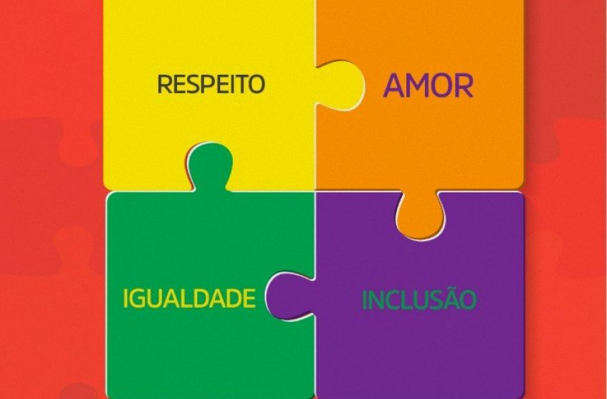

O que é o Dia do Orgulho Autista?

O Dia do Orgulho Autista, celebrado em 18 de junho é uma data criada para afirmar que o autismo é uma forma natural de neurodiversidade. É um movimento que valoriza a autoaceitação, a diversidade de pensamentose a luta contra o preconceito.
Diferente de outras campanhas focadas em conscientização médica, essa data celebra a identidade autista e foi criada por pessoas autistas, com o objetivo de promover orgulho, não pena.
O símbolo do infinito colorido representa a variedade infinita de experiências e formas de ser. Celebre, escute e valorize as vozes autistas.
Curiosidades
- O Dia do Orgulho Autista é celebrado no mesmo dia mundialmente: 18 de junho.
- Muitas campanhas usam o azul, mas o orgulho autista usa o infinito colorido para representar diversidade.
- Movimentos autistas preferem termos como "autista" ao invés de "pessoa com autismo".